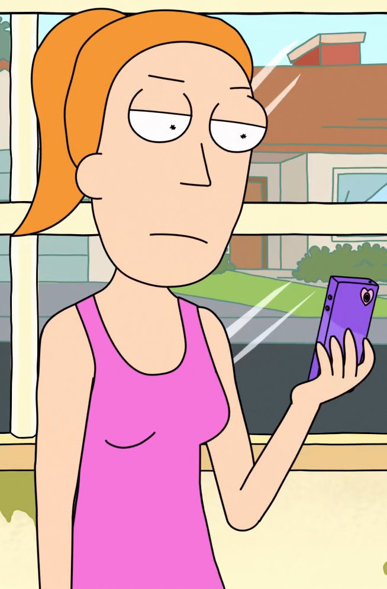

Rick Sanchez (Voz original: Justin Roiland / Voz no Brasil: Caio César Oliveira (1ª-2ª temporadas) e Ênio Vivona (3ª temporada) - Um cientista alcoólatra de 60 anos extremamente inteligente que é capaz de construir máquinas e acessórios tecnológicos que o permitem viajar por diversas dimensões e realidades paralelas. Ele quase nunca pensa nas consequências de suas ações e possui um comportamento excêntrico e um estilo de vida niilista. É pai de Beth, sogro de Jerry e avô de Morty e Summer.
Morty Smith
Morty Smith (Voz original: Justin Roiland / Voz no Brasil: Renan Alonso) - Neto facilmente influenciável e com dificuldades escolares de 14 anos de Rick, parece ser a quem este demonstra maior afeto e expectativa dentro da família, o que faz com que ele sempre acabe por acompanhar Rick em suas aventuras, enquanto descobre o que é o próprio mundo real e reflete sobre a existência das coisas.
Beth Smith
Beth Smith (Voz original: Sarah Chalke / Voz no Brasil: Raquel Elaine) - É filha de Rick, esposa de Jerry e mãe de Summer e Morty, aos 34. Como seu pai, ela bebe muito e é bastante inteligente, mas ao contrário dele, é sempre responsável. Ela trabalha em um hospital como cirurgiã de cavalos e muitas vezes se arrepende de não ter sido médica. Ela frequentemente tem discussões com seu marido, vendo uma incompatibilidade em ambos.
Jerry Smith
Jerry Smith (Voz original: Chris Parnell / Voz no Brasil: André Gaiani) - Pai inseguro de Summer e Morty, 35 anos que desaprova fortemente a influência de Rick sobre seu filho. Ele trabalhou em uma agência de publicidade de baixo nível, até que foi demitido por incompetência e agora está desempregado. Tem uma personalidade infantil e impressionável.
Summer Smith

Summer Smith (Voz original: Spencer Grammer / Voz no Brasil: Mariana Pozatto) - Tem 17 anos e é a irmã mais velha de Morty, uma adolescente convencional muitas vezes superficial, que é obcecada por melhorar seu status com seus colegas. Ela ocasionalmente expressa inveja por Morty sempre acompanhar Rick em suas aventuras interdimensionais. Na segunda temporada, ela acompanha Rick e Morty com mais freqüência. Foi revelado que Beth tinha engravidado aos 17, a idade que Summer tinha.